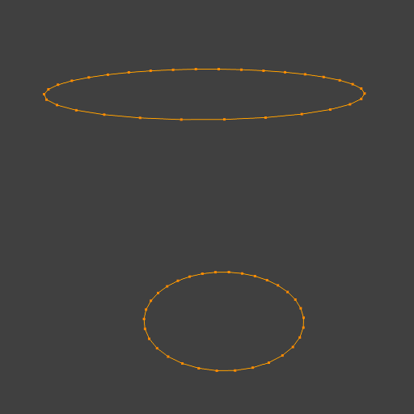
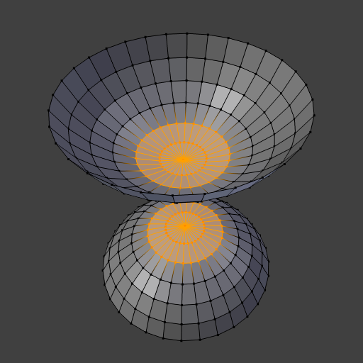

边工具¶
Reference
Ctrl-EMake Edge/Face¶
Reference
FIt will create an edge or some faces, depending on your selection.
See also Creating Geometry.
Set Edge Attributes¶
Edges can have several different attributes that affect how certain other tools affect the mesh.
Mark Seam and Clear Seam¶
Reference
Seams are a way to create separations, "islands", in UV maps. See the UVTexturing section for more details. These operators set or unset this flag for selected edges.
Mark Sharp and Clear Sharp¶
Reference
The Sharp flag is used by the Edge Split Modifier, which is part of the smoothing techniques. As seams, it is a property of edges, and these operators set or unset it for selected ones.
Adjust Bevel Weight¶
Reference
This edge property, a value between (0.0 to 1.0), is used by the Bevel Modifier to control the bevel intensity of the edges. This operator enters an interactive mode (a bit like transform tools), where by moving the mouse (or typing a value with the keyboard) you can set the (average) bevel weight of selected edges.
Edge Crease¶
Reference
Shift-EThis edge property, a value between (0.0 to 1.0), is used by the Subdivision Surface Modifier to control the sharpness of the edges in the subdivided mesh. This operator enters an interactive mode (a bit like transform tools), where by moving the mouse (or typing a value with the keyboard) you can set the (average) crease value of selected edges. A negative value will subtract from the actual crease value, if present. To clear the crease edge property, enter a value of -1.
Edge Slide¶
Reference
Slides one or more edges across adjacent faces with a few restrictions involving the selection of edges (i.e. the selection must define a valid loop, see below.)
- Even
E - Forces the edge loop to match the shape of the adjacent edge loop.
You can flip to the opposite vertex using
F. UseAlt-Wheelto change the control edge. - Flip
F - When Even mode is active, this flips between the two adjacent edge loops the active edge loop will match.
- Clamp
AltorC - Toggle clamping the slide within the edge extents.
In Proportional mode, Wheel, or Left and Right
changes the selected edge for calculating a proportion.
Unlike Percentage mode, Proportional
- Factor
- Determines the amount of slide performed. Negative values correspond to slides toward one face, while positive ones, refer to the other one. It is also displayed in the 3D View footer.
- Mirror Editing
- Lets you propagate the operation to the symmetrical elements of the mesh (if present, in local X direction).
- Correct UVs
- Corrects the corresponding UV coordinates, if these exist, to avoid image distortions.
Usage¶
By default, the position of vertices on the edge loop move as a percentage of the distance between their original position and the adjacent edge loop, regardless of the edges' lengths.
{kind=link}
{kind=link}
Even Mode¶
Even mode keeps the shape of the selected edge loop the same as one of the edge loops adjacent to it, rather than sliding a percentage along each perpendicular edge.
In Even mode, the tool shows the position along the length of the currently selected edge which is marked in yellow, from the vertex that as an enlarged red marker. Movement of the sliding edge loop is restricted to this length. As you move the mouse the length indicator in the header changes showing where along the length of the edge you are.
To change the control edge that determines the position of the edge loop,
use the Alt-Wheel to scroll to a different edge.

Even Mode Enabled. |
{kind=link}
Moving the mouse moves the selected edge loop towards or away from the start vertex, but the loop line will only move as far as the length of the currently selected edge, conforming to the shape of one of the bounding edge loops.
Limitations & Workarounds¶
There are restrictions on the type of edge selections that can be operated upon. Invalid selections are:
- Loop crosses itself
- This means that the tool could not find any suitable faces that were adjacent to the selected edge(s). Fig. Loop crosses is an example that shows this by selecting two edges that share the same face. A face cannot be adjacent to itself.
- Multiple edge loops
- The selected edges are not in the same edge loop, which means they do not have a common edge. You can minimize this error by always selecting edges end to end or in a "Chain". If you select multiple edges just make sure they are connected. This will decrease the possibility of getting looping errors.
- Border Edge
- When a single edge was selected in a single sided object. An edge loop cannot be found because there is only one face. Remember, edge loops are loops that span two or more faces.
A general rule of thumb is that if multiple edges are selected they should be connected end to end such that they form a continuous chain. This is literally a general rule because you can still select edges in a chain that are invalid because some of the edges in the chain are in different edge loops.
Rotate Edge¶
Reference
Rotating an edge clockwise or counter-clockwise spins an edge between two faces around their vertices. This is very useful for restructuring a mesh's topology. The tool can operate on one explicitly selected edge, or on two selected vertices or two selected faces that implicitly share an edge between them.

Edge, rotated CW. |
{kind=link}
Using Face Selection¶
To rotate an edge based on faces you must select two faces, Fig. Adjacent selected faces,
otherwise Blender notifies you with an error message,
"ERROR: Could not find any select edges that can be rotated". Using either Rotate Edge CW
or Rotate Edge CCW will produce exactly the same results as if you had
selected the common edge shown in Fig. Selected edge rotated CW and CCW.
Edge Split¶
Reference
Edge Split is similar to the Rip tool. When two or more touching interior edges, or a border edge is selected when using Edge Split, a hole will be created, and the selected edges are duplicated to form the border of the hole.
{kind=link}
{kind=link}
Bridge Edge Loops¶
Reference
Bridge Edge Loops connects multiple edge loops with faces.
- Connect Loops
- Open Loop
- Loops connected with open ends.
- Closed Loop
- Tries to connect to a circular loop (where start and end is merged).
- Loop pairs
- Connects each even count of loops individually.
- Merge
- ToDo.
- Merge Factor
- ToDo.
- Twist
- Determines which vertices in both loops are connected to each other.
- Number of Cuts
- The number of intermediate edge loops used to bridge the distance between two loops.
- Interpolation
- Linear, Blend Path, Blend Surface
- Smoothness
- Smoothness of the Blend Path and Blend Surface.
- Profile Factor
- ToDo.
- Profile Shape
- ToDo. Compare to Proportional Editing Falloff.
Examples¶
Simple example showing two closed edge loops.

Input. |

Bridge Result. |
{kind=link}
Example of bridge tool between edge loops with different numbers of vertices.

Input. |

Bridge Result. |
Example using the bridge tool to punch holes in face selections and connect them.

Input. |

Bridge Result. |
{kind=link}
Example showing how bridge tool can detect multiple loops and loft them in one step.

Input. |

Bridge Result. |
Example of the subdivision option and surface blending with UV's.

Input. |

Bridge Result. |